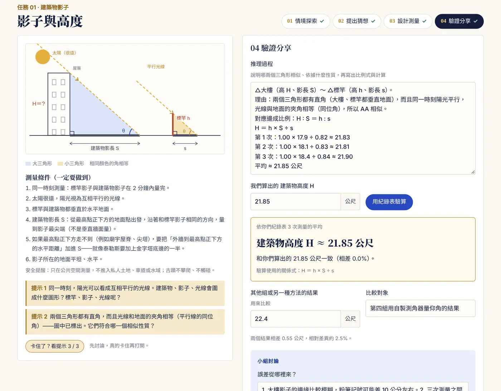
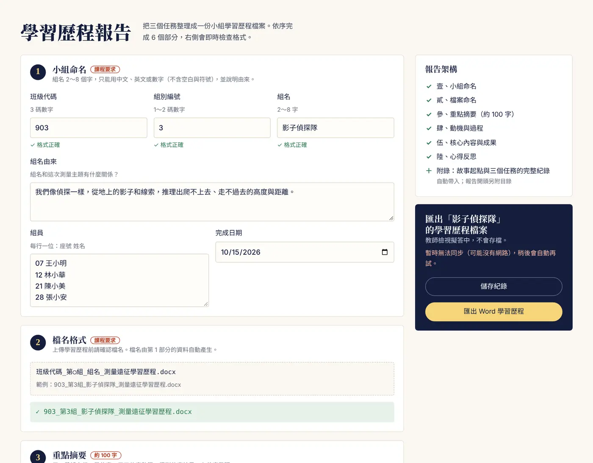
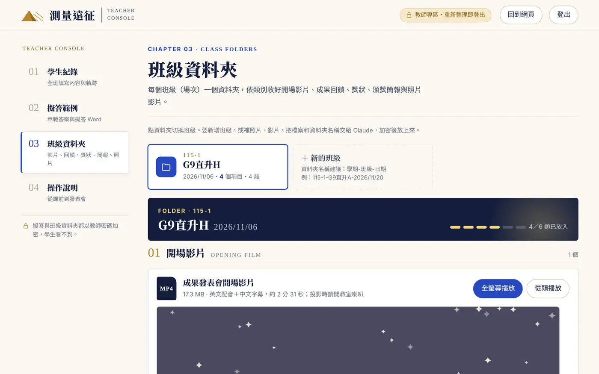
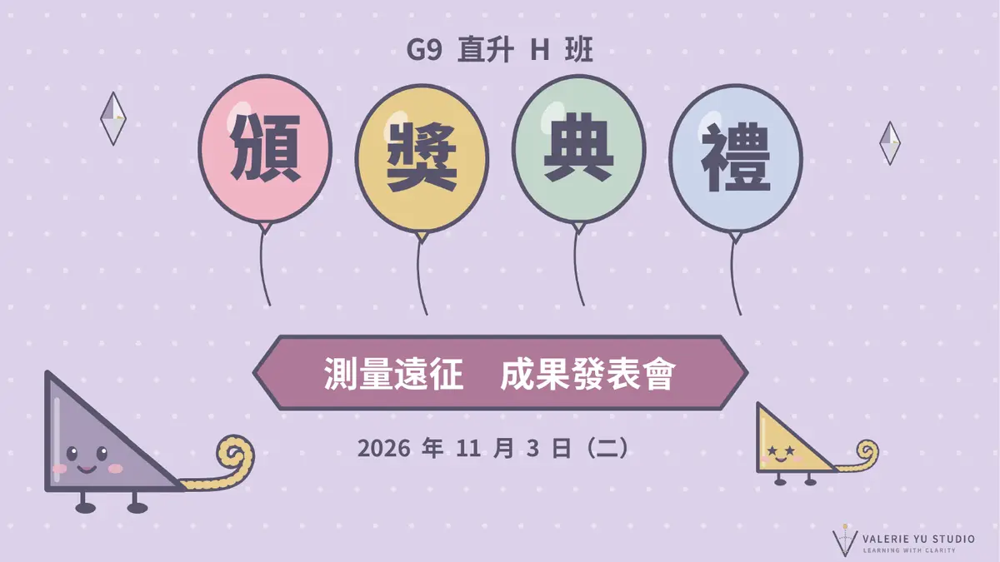
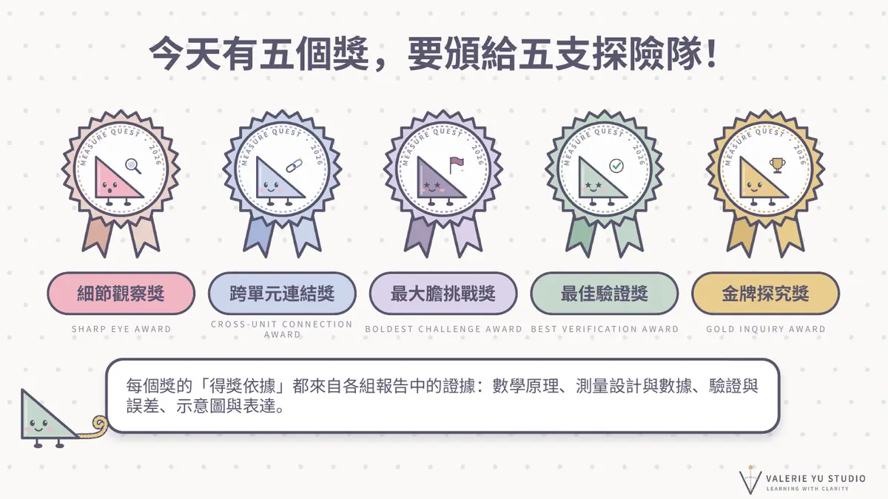

TASK 01 · 高度
影子與高度
往上量不到。借太陽的平行光，讓建築和 1 公尺標竿各留下一個影子三角形。
- 戶外
- 大樓、廟宇屋脊、鐘樓、路燈
- 室內
- 改用鏡子反射：入射角＝反射角
- 相似依據
- 兩個直角＋平行光的同位角
課本的相似應用題，三角形都已經畫好了。這門課要學生自己在校園、社區找一個量不到的東西，自己造出一對相似三角形，再用量得到的長度推算出來。
量不到的東西只有三種樣子，每一種要用不同的方式造出相似三角形。
往上量不到。借太陽的平行光，讓建築和 1 公尺標竿各留下一個影子三角形。
斜的量不到。用水平直尺和鉛直落差，在坡面上切出一個小三角形，再推到整段坡道。
走不過去。用直角和「三點對準」，把對岸的距離搬到自己這一側量。
學生不用登入，進站就能開始。每一步都存在自己的裝置，做完的任務會自動進入成果展，最後整理成一份可上傳的學習歷程。
全班一起拖動太陽仰角，觀察木棍和金字塔的「高 ÷ 影長」始終相等，討論「一定要等影長＝棍長嗎？」
三張任務卡，每張可選戶外或室內，測量對象可從清單挑或自訂。下雨天一樣能做。
每個階段都要先寫自己的想法；示意圖、已知量表、三次測量紀錄都在同一頁。
提示從觀察條件、找相似三角形到對應邊，一層一層打開。按驗算才看得到推算值和公式，學生要先自己算。
每個任務都要寫比較對象與差異百分比，練習「用第二種方法證明答案」。
小組命名、檔名格式、重點摘要、動機與過程、核心成果、心得反思六個部分；組名與檔名格式沒通過檢查就無法匯出 Word。


網站會把每組的操作歷程同步到老師的 Google 試算表。批改時看的不只是最後的報告，還有他們花了多少時間、卡在哪裡、有沒有自己驗算。
記錄每個區塊的投入時間、打開提示次數、按驗算次數、貼上 20 字以上的文字與帶入草稿。報告最後一頁自動附上摘要。
依日期與類型篩選全班裝置，預設顯示最近三天。點一組可預覽他們的填寫畫面，也能匯出該組 Word。
用學生看到的版面檢視完整示範答案與模擬數據，可下載擬答版 Word 當評分參考。
每班一個資料夾，收好開場影片、成果回饋、獎狀、頒獎簡報與照片影片。全部以教師密碼加密。

從校樹、路燈到 20 公里外的台北 101，各組選的對象都不一樣。下表的時間與次數由網站自動記錄，獎項依報告中的證據頒發。
| 小組 | 三個任務量了什麼 | 投入時間 | 提示 | 驗算 | 獎項 |
|---|---|---|---|---|---|
| 902 第 3 組 | 教室櫃子（鏡子反射）、樓梯、走廊 | 0 | 26 | 金牌探究獎 | |
| 901 第 1 組 | 校樹、社區坡道、馬路對面的大樓 | 9 | 13 | 最佳驗證獎 | |
| 903 第 3 組 | 圖書館書櫃（鏡子）、社區坡道、閱覽區 | 0 | 4 | 細節觀察獎 | |
| 902 第 5 組 | 路燈、捷運站坡道、台北 101 | 9 | 7 | 最大膽挑戰獎 | |
| 901 第 2 組 | 樓梯、停車場（任務一待補） | 1 | 2 | 跨單元連結獎 |
提示：三個任務各有 3 層，最多 9 次。驗算：按下「用紀錄表驗算」的次數。投入時間：間隔超過 5 分鐘算新的一段，合計估算。


計算本身幾乎都對，真正的落差在「數據是不是真的量得到」與「驗證是不是獨立」。以下是逐份批改後整理出的共通問題，下次上課可以先提醒。
樓梯任務用「階數 × 階深」當水平長，再拿「階數 × 階高」當比較對象，差異 0%。
哪一個量是獨立量到的？換一種方法，例如從平台邊垂下捲尺。
15 公分直尺的影子只有 4 公分，代表太陽仰角約 75°；十月底台灣正午最高只有約 51°。
用量角器畫出自己的三角形，再查當天正午仰角，學生會自己發現問題。
人站在鏡子和書櫃之間，其實看不到頂端的倒影。
要排成「書櫃—鏡子—人」，人面向書櫃往後退到倒影落在鏡心。
坡道的垂直高度已經直接量到，比例式算出的其實是水平長，卻寫成平台高度。
先圈出「未知量」，再列比例式。
先擺成 AC : CD ＝ 3 : 1、再站在離 D 一公尺的地方，結果必然是 3 公尺。
E 點要對準後才「找」出來，不能先決定。
猜想寫「櫃子 175 公尺」；已知量表和三次測量紀錄是兩套不同的數字。
同一題出現兩個答案時，停下來檢查。
報告先用紅筆圈選並在旁邊寫修正指導，再發一份回饋單；成果發表會依規準評分，最後頒獎。
寫出這組已經做對、要保留的地方，例如「用等腰直角三角形法再驗證一次，兩個結果只差 10 公分」。
每一條都有標題和具體的修正方式，對應報告上的紅圈編號。
老師看不出來怎麼做的地方，請學生當面說明或重測，回饋單上留有回覆欄。
九年級相似形單元都適用。學生用手機或平板分組操作，戶外、室內都能做。
valerieyu55.github.io/measure-quest
直接把網址給學生。請提醒學生全程使用同一台裝置與瀏覽器，不要用無痕模式。
要看學生紀錄、擬答範例，或把資料接到自己的 Google 試算表，歡迎寫信給 Valerie 老師（valerieyu@kcislk.ntpc.edu.tw）協助設定。